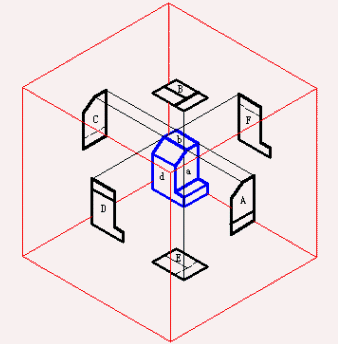
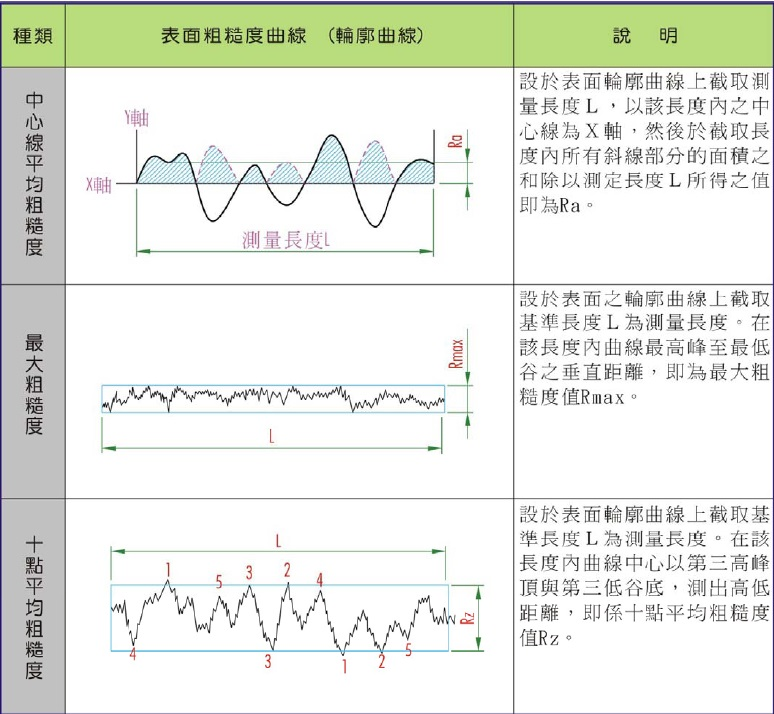
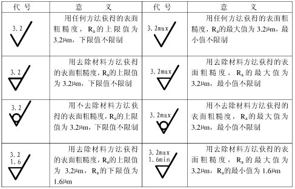

「圖學」就是把3D的東西用2D的方式表達出來
元件都是3D的，但是2D的圖才方便傳遞資訊。所以把3D的東西投影成個各種2D的圖，對工程上來說才方便。而將3D的物件化為2D的其中一個方法就是投影，
就像晚上睡覺前你可以用手在可愛的小夜燈旁邊比出各種牛鬼蛇神般的影子。
不過工程上的投影，為了避免人做出各種牛鬼蛇神的東西，所以需要有一套約定好的方法來投影，這個就是工程圖的第一步——投影原理
投影原理
因為空間就只有x, y, z有3個方向，所以看一個物件也會有3個方向，這三個方向分別叫前視(V)、俯視(H)、profile。 舉例來說圓錐的H圖是個三角形，V圖是圓形;而球體的V圖與H圖都是圓形。
(等我他媽加簽到你就看得到圖了)
另外，對於線條也有一些原則：看得到的線都會畫實線(比如說面對你的兩面的交線)，看不到的線都是虛線(比如背面的輪廓、螺紋線)。如果V與H兩張圖上有相同的線，那在VH之間要有 相應的提示線，像這樣：
(等我他媽加簽到你就看得到圖了)
雖然哪個面是前視、俯視使可以任意決定的，不過一般來說都把最明顯的面當成前視。
雖然說有3個方向 * 正負2個方向 = 6個面要畫。但實際上，只要選3個方向，然後另外一面的邊都用虛線畫，這樣就可以只畫3張圖就可以了。 更進一步來說，雖然最多需要三張來唯一決定一個桿件，但是有時候桿件會有某種對稱性(比如他是圓的)，就有機會少畫一張圖，這時就要秉持少畫少錯的原則把它省略。像這個就只要一張圖：
(等我他媽加簽到你就看得到圖了)
在不影響表達的情況下，東西能少畫就少畫。比如說在上面那張圖中，因為註明了半徑(用符號\(\phi\))，就立刻知道是圓，所以畫到這裡就不用繼續畫下去了。
能少畫就少畫，用最精簡的圖表達出完整意思。
另外，畫螺紋有一些不太一樣的原則。螺紋內部的線條很複雜，如果每張圖都要畫出詳細的螺紋，實在是一個畫到眼睛脫窗的東西， 不過像螺紋這種大家都在用的東西都有統一的工地規格，所以不用親自繪製，只要用簡化符號附註 並依照格式附上規格就可以了。像這樣：
(等我他媽加簽到你就看得見了)
乾淨、清楚，能夠簡單表達概念，就是圖學的最高原則。
識圖
就是看懂別人畫的圖。一般來說這是多練習就可以做到的事，而且跟寫扣一樣很吃靈感。這裡有一個示範：
(車床加工圖 Step 1:)(等我他媽加簽到你就看得到圖了)
依照 看得見的輪廓是實線，看不見的輪廓是虛線的原則，可以知道這是一個圓柱。 因為沒有虛線，所以通通實心。
圖中除了有圖之外，可以發現圖上還有一些額外的資訊，他們分別是：
1. 切削加工符號
(就是你看到的那個勾勾)
這個勾勾代表各種 表面處理的精細程度以及加工的方式。比如說表面是否需要光滑？如果要光滑的話，那需要光滑到什麼程度？要用甚麼加工方法？詳細的使用可以看 這裡。
另外，表面的粗糙程度，也需要一個「量測粗糙程度」的量(這不是bug，這是個粗糙的表面)來衡量，而這個量就叫做表面粗糙度：
2. 表面粗糙度：
圖上都說得很清楚，所以就不附註了。順帶一提據傳10點平均粗糙度是個很機掰的取10個你爽的點然後把牠們取平均讓數字變好看的一種表示方法。
有了這兩個概念之後，兩者合起會是表達成這樣：
這樣一來。就可以明確知道表面需要多細緻了。
雖然說spec可以給好，但是出貨的人不一定會誠實就是惹～